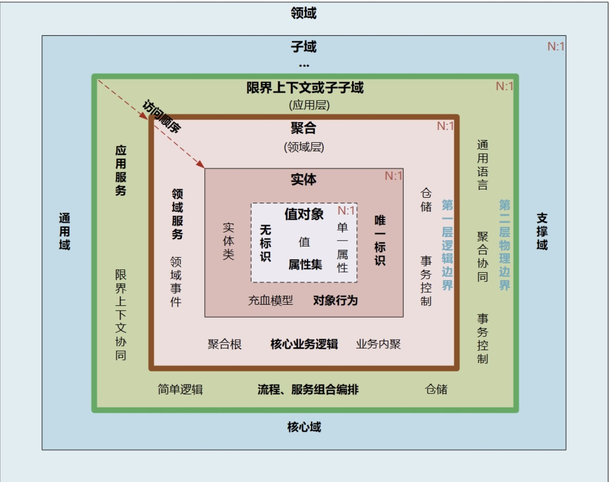
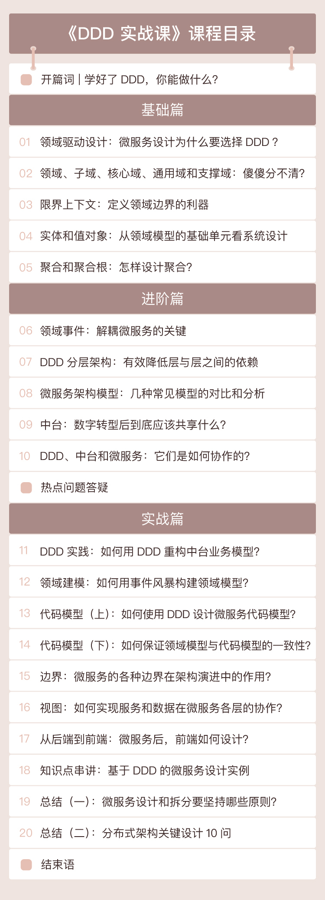

- 00 开篇词 学好了DDD，你能做什么？.md
- 01 领域驱动设计：微服务设计为什么要选择DDD.md
- 02 领域、子域、核心域、通用域和支撑域：傻傻分不清？.md
- 03 限界上下文：定义领域边界的利器.md
- 04 实体和值对象：从领域模型的基础单元看系统设计.md
- 05 聚合和聚合根：怎样设计聚合？.md
- 06 领域事件：解耦微服务的关键.md
- 07 DDD分层架构：有效降低层与层之间的依赖.md
- 08 微服务架构模型：几种常见模型的对比和分析.md
- 09 中台：数字转型后到底应该共享什么？.md
- 10 DDD、中台和微服务：它们是如何协作的？.md
- 11 DDD实践：如何用DDD重构中台业务模型？.md
- 12 领域建模：如何用事件风暴构建领域模型？.md
- 13 代码模型（上）：如何使用DDD设计微服务代码模型？.md
- 14 代码模型（下）：如何保证领域模型与代码模型的一致性？.md
- 15 边界：微服务的各种边界在架构演进中的作用？.md
- 16 视图：如何实现服务和数据在微服务各层的协作？.md
- 17 从后端到前端：微服务后，前端如何设计？.md
- 18 知识点串讲：基于DDD的微服务设计实例.md
- 19 总结（一）：微服务设计和拆分要坚持哪些原则？.md
- 20 总结（二）：分布式架构关键设计10问.md
- 答疑：有关3个典型问题的讲解.md
- 结束语 所谓高手，就是跨过坑和大海.md
00 开篇词 学好了DDD，你能做什么？
你好，我是欧创新，人保高级架构师，一名奋斗在软件架构一线十余年的技术人。
目前热衷于采用领域驱动设计（DDD）实现中台业务建模，专注基于 DDD 的微服务设计和开发等。另外，我也正在深入探索传统企业中台数字化转型的技术和方法体系。很高兴在这个专栏和你见面！
我与 DDD
说起 DDD 的实践，那就不得不提微服务了。2015 年，我刚开始接触微服务，那时候和别人去介绍微服务的设计理念，接受度并不高，毕竟大家普遍采用的还是集中式架构。
但即便是在四年前，业务的日渐复杂也是可以预见的，微服务的价值确确实实存在。我就从那个时候开始深入研究，作为公司的高级架构师，我也一直处于公司中台转型和微服务建设的一线。
这个过程中，我和我的技术团队踩过不少坑，最尖锐的一个问题是：“微服务到底怎么拆分和设计才算合理，拆多小才叫微服务？”而微服务的边界历来也是最容易产生争议的地方。
紧接着，阿里巴巴成功完成了中台战略转型。于是，很多大型公司也开启了中台数字化战略转型，中型公司也根据自身需求跃跃欲试。但也有很多公司由于历史原因，存在着大量系统重复建设的问题。
作为中台，需要将通用的可复用的业务能力沉淀到中台业务模型，实现企业级能力复用。因此中台面临的首要问题就是中台领域模型的重构。而中台落地时，依然会面临微服务设计和拆分的问题。这两个问题一前一后，放在任何一家公司，我想都是一个不小的挑战。
这也是我一直在探索和解决的问题。这两年，中台越来越火，微服务越来越热，参与的人越来越多。那是否有好的方法来指导中台和微服务的设计呢？
一次偶然的机会我接触到了 DDD，深入研究后，我发现，运用 DDD 设计思想实现的微服务边界确实清晰很多，业务领域划分也十分合理。后来，我和我的伙伴们用 DDD 做了很多的微服务实践。
关于专栏
有了这样一个基础，我开始尝试将我对 DDD 的理解和一些实践经验沉淀，并写了几篇文章发表在了 InfoQ 上。在读者的留言中，我发现很多人对 DDD 是有一定的了解的，但由于 DDD 的知识点多且较为抽象，体系庞大，又缺少实践经验和案例指导，很多人对 DDD 的应用都有这样那样的困惑，哪怕知道 DDD 的好处，但是也感到无从下手。
收到极客时间的邀请后，我就开始全力打造课程大纲，力求干货充盈，理论与实践并重。这做起来并不是一件轻松的事儿，专栏从确定主题到和你见面，已经耗时三个多月了。
DDD 虽然历史很久了，但它与微服务和中台设计的结合，却是一片很新的领域。早在 2003 年就诞生的 DDD，怎么来指导“迟到”近 20 年才大热的微服务设计呢？
我认为，要想应用 DDD，首要任务就是要吃透 DDD 的核心设计思想，搞清楚 DDD、微服务和中台之间的关系。中台本质是业务模型，微服务是业务模型的系统落地，DDD 是一种设计思想，它可以同时指导中台业务建模和微服务设计，它们之间就是这样的一个铁三角关系。DDD 强调领域模型和微服务设计的一体性，先有领域模型然后才有微服务，而不是脱离领域模型来谈微服务设计。
其次，就是通过战略设计，建立领域模型，划分微服务边界。这步是关键，你可以借助专栏中的一些经验。
最后，通过战术设计，我们会从领域模型转向微服务设计和落地。此时，边界清晰、可持续演进的微服务架构雏形就在你面前了。
遵循以上过程，这门课的设计思路也就诞生了。
关于课程设计
如果你以往对 DDD 的了解并不深入，甚至是第一次接触，你一定会觉得 DDD 的术语非常多，且非常陌生，这些术语之间的关系都算是个“拦路虎”。
搞懂这些之后呢，怎么应用它们，从何下手来设计领域模型等等这些问题又接踵而至。
如果你对 DDD 有过研究，在学会怎么用之后，你可能还会反过来想：“我费了这么大劲儿去搞懂它，那它到底会让我的系统变成什么样呢？可以解决什么具体问题？是不是真有大家说得那么好？”
这些都将是这个专栏要交付给你的内容。总结一下的话，我希望这个专栏能带给你这样几点收获：
- 用浅显易懂的案例带你了解 DDD 必知必会的 10 大核心概念，深入设计思想，厘清各知识域之间的关系；
- 用 DDD 分层架构带你弄懂微服务架构各层之间的关系，并完成微服务分层和代码模型设计；
- 用 DDD 战略设计和事件风暴带你完成领域建模和企业级中台业务建模；
- 用一个典型的案例带你完整走一遍 DDD 战略设计和战术设计的全流程，学习 DDD 在领域模型和微服务设计过程中的技术要点；
- 带你深化微服务架构设计原则和注意事项，建立适应你公司技术能力和文化的微服务，建立演进式的微服务架构。
希望这些收获能够给正在从事或者有兴趣深入了解微服务设计和中台的你，提供一些实质性的帮助。
在具体的课程设计上，我将内容分为了三大部分：基础篇、进阶篇和实战篇。下面我来逐一介绍一下。
基础篇
基础篇主要讲解 DDD 的核心知识体系，具体包括：领域、子域、核心域、通用域、支撑域、限界上下文、实体、值对象、聚合和聚合根等概念。我会用浅显易懂的案例带你理解它们以及它们之间的合作、依赖关系。

进阶篇
进阶篇主要讲解领域事件、DDD 分层架构、几种常见的微服务架构模型以及中台设计思想等内容。具体包括：
- 如何通过领域事件实现微服务解耦？
- 怎样进行微服务分层设计？
- 如何实现层与层之间的服务协作？
- 通过几种微服务架构模型的对比分析，让你了解领域模型和微服务分层的作用和价值。
- 另外，我还会介绍中台设计的核心思想，和你探讨如何实现前中后台的协同和融合？如何利用 DDD 进行中台设计？
实战篇
实战篇是我们专栏课程的重点，我准备了多个实战小项目。
- 中台和领域建模的实战：带你了解如何用 DDD 设计思想构建企业级可复用的中台业务模型，了解事件风暴以及用事件风暴构建领域模型的过程。
- 微服务设计实战：带你了解如何用 DDD 设计微服务代码模型，如何从领域模型完成微服务设计，建立领域模型与微服务代码模型的映射关系，如何完成微服务的架构演进等。
然后我会用一个典型的案例将 DDD 所有的知识点串联在一起，带你深入了解如何用 DDD 的设计思想来完成领域建模和微服务设计的全流程。
最后，我还会补充分享一个前端的最新设计思想，带你了解如何借鉴微服务的设计思想来设计前端应用，实现前端应用的解耦。同时，我还为你总结了微服务设计原则以及分布式架构设计的关键注意事项。

最后，我想说，DDD 看似复杂，可学习起来并不困难，多动手参与几次 DDD 事件风暴工作坊，你就能很快理解 DDD 的核心设计思想和设计过程，成功进阶了。
如果你的公司尚不能给你提供实战的机会，你可以在这里小试牛刀。
相信这个专栏会帮助你掌握一套完整而系统的基于 DDD 的微服务设计和拆分方法，明确从战略设计到战术设计的微服务标准设计过程，使得你的微服务设计思路能够更加清晰，设计过程更加规范，让你的中台和微服务落地如虎添翼。
© 2019 - 2023 Liangliang Lee. Powered by gin and hexo-theme-book.